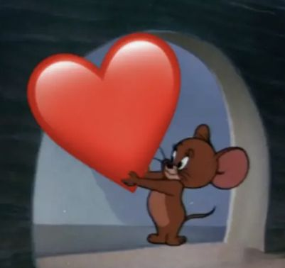

عارف انك ضغطت كتير بس اضغط على جيري مرة واحدة بس

كل سنة وانت طيب يا أحلى حاجة حصلتلي❤️.
بجد أنا بحب ضحكتك، بحب عينيك، بحب ذوقك، بحب أسلوبك، وبحب قد إيه أنت شخص بيرفكت.. بحبك فشششخ..
كل يوم.. أول حاجة بتيجي في بالي هي أنت، وأول صورة بشوفها هي صورتك اللي محفورة في قلبي قبل عقلي. وكل مرة أكلمك فيها بلاقي نفسي ببتسم زي العبيط قدام التليفون من غير ما أحس.
مش متخيل قد إيه أنت فارق معايا.. مجرد دقيقة كلام معاك بتقلب يومي كله للأحسن. ومن ساعة ما دخلت حياتي وكل حاجة اتغيرت، الأيام بقت أخف، الضحكة زادت، شكراً يا عمور❤️.
مش عارف ده سحر ولا إيه، بس اللي عارفه إني ممتن جدًا إنك في حياتي، ومش عايز ده يخلص أبدًا. ربنا يخليك ليا ويديك كل السعادة اللي بتديهالي وأكتر.. يوم ميلاد سعيد يا أحب حد لقلبي🎂❤️.
بجد أنا بحب ضحكتك، بحب عينيك، بحب ذوقك، بحب أسلوبك، وبحب قد إيه أنت شخص بيرفكت.. بحبك فشششخ..
كل يوم.. أول حاجة بتيجي في بالي هي أنت، وأول صورة بشوفها هي صورتك اللي محفورة في قلبي قبل عقلي. وكل مرة أكلمك فيها بلاقي نفسي ببتسم زي العبيط قدام التليفون من غير ما أحس.
مش متخيل قد إيه أنت فارق معايا.. مجرد دقيقة كلام معاك بتقلب يومي كله للأحسن. ومن ساعة ما دخلت حياتي وكل حاجة اتغيرت، الأيام بقت أخف، الضحكة زادت، شكراً يا عمور❤️.
مش عارف ده سحر ولا إيه، بس اللي عارفه إني ممتن جدًا إنك في حياتي، ومش عايز ده يخلص أبدًا. ربنا يخليك ليا ويديك كل السعادة اللي بتديهالي وأكتر.. يوم ميلاد سعيد يا أحب حد لقلبي🎂❤️.